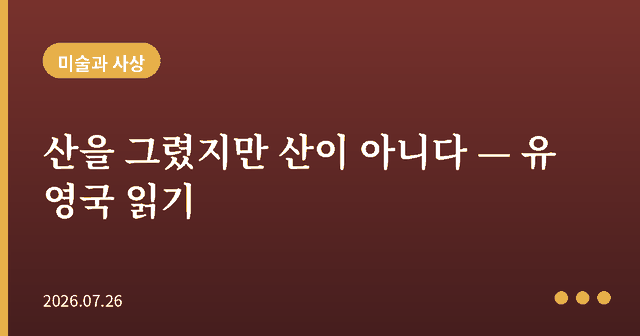
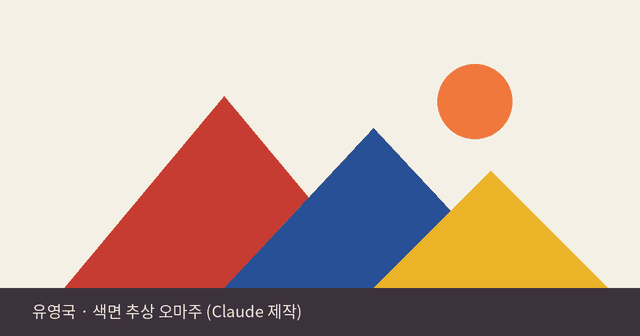

산을 그렸지만 산이 아니다 — 한국 추상의 거장 유영국 읽기

산을 그렸는데 산이 아니라는 말을 처음 들었을 때, 나는 그게 궤변처럼 느껴졌다. 유영국의 그림 앞에 서면 분명 삼각형 몇 개와 색면이 있을 뿐인데, 어느 순간 그것은 봉우리가 되고 계곡이 된다. 나는 이 착시 같은 경험이야말로 추상미술이 던지는 가장 오래된 철학적 질문, 즉 '재현이란 무엇인가'라는 질문의 정중앙에 서 있다고 생각한다.

플라톤의 그림자와 유영국의 산
플라톤은 『국가』에서 화가를 침대를 만드는 목수보다 한 단계 더 낮은 자리에 놓았다. 목수는 이데아(idea)로서의 침대를 모방해 실제 침대를 만들지만, 화가는 그 침대를 다시 모방해 그림자의 그림자를 그릴 뿐이라는 것이다. 만약 이 기준을 따른다면 유영국의 산은 실패한 그림이어야 한다. 실제 산의 모습과 전혀 닮지 않았으니 말이다. 그런데 나는 유영국이 오히려 플라톤의 위계를 뒤집었다고 생각한다. 그는 눈에 보이는 산의 표면을 베끼는 대신, 산을 마주했을 때 자신의 내면에 남은 형태와 색의 구조, 즉 산의 '본질에 가까운 어떤 것'을 곧장 캔버스에 옮기려 했다. 이것은 이데아를 흉내 낸 그림자가 아니라, 오히려 이데아에 더 가까이 다가서려는 시도에 가깝다.
닮지 않았기에 더 정확하다
20세기 초 유럽에서 추상미술이 등장했을 때, 칸딘스키를 비롯한 화가들은 비슷한 주장을 폈다. 대상을 사실적으로 재현할수록 오히려 그 대상이 우리에게 불러일으키는 감정과 본질에서 멀어진다는 것이다. 나는 이 역설이 유영국에게도 정확히 적용된다고 본다. 그가 산의 윤곽과 나뭇잎 하나하나를 정밀하게 그렸다면, 우리는 그 그림을 보고 '아, 저건 어디의 산이구나' 하고 넘어갔을 것이다. 그러나 그는 산을 삼각형과 원, 강렬한 원색으로 환원함으로써, 우리로 하여금 특정한 산이 아니라 산이라는 존재가 인간에게 주는 웅장함과 침묵 그 자체를 마주하게 만든다. 정확한 모사가 아니라 과감한 생략을 통해 더 근본적인 진실에 도달하는 것, 나는 이것이 추상이 가진 힘이라고 생각한다.
몸으로 보는 그림
현상학자 모리스 메를로퐁티는 지각이란 눈이라는 기계가 대상을 수동적으로 받아들이는 과정이 아니라, 몸 전체가 세계와 관계 맺는 능동적 행위라고 보았다. 유영국의 그림을 두 걸음 물러서서 볼 때와 코앞까지 다가가 볼 때 전혀 다른 것이 보인다는 사실은, 나에게 이 메를로퐁티의 통찰을 실감하게 하는 경험이었다. 멀리서는 산과 해가 보이지만, 가까이 다가가면 그것은 두껍게 쌓아 올린 물감의 질감과 붓질의 흔적으로 흩어진다. 하나의 캔버스 안에 풍경과 물성이라는 두 개의 층위가 공존하고, 관람자는 자신의 몸을 움직여야만 그 둘을 오갈 수 있다. 그림은 가만히 걸려 있지만, 그것을 완성하는 것은 결국 그 앞에서 움직이는 우리의 몸이다.
서구의 언어로 가장 한국적인 것을 말하다
유영국은 일본 유학을 통해 유럽의 기하학적 추상을 흡수했지만, 평생 그린 것은 결국 고향인 울진의 산과 바다였다. 나는 여기서 한 가지 흥미로운 긴장을 본다. 그는 서구에서 수입된 조형 언어를 사용하면서도, 그 언어로 표현하려 한 대상은 지극히 개인적이고 토착적인 풍경이었다. 이것은 단순한 절충이 아니라, 보편적 형식과 특수한 경험이 어떻게 하나의 화면 안에서 만날 수 있는지를 보여주는 사례라고 생각한다. 오늘날에도 외국에서 들여온 이론이나 형식을 어떻게 자기만의 것으로 소화할 것인가라는 질문은 여전히 유효하다.
감상자에게 남는 것
전시장에서 유영국의 그림을 마주한다면, 나는 두 가지를 함께 해보시길 권하고 싶다. 하나는 멀리서 그 산의 웅장함을 그대로 받아들이는 것, 다른 하나는 가까이 다가가 그것이 결국 색과 질감으로 이루어진 평면이라는 사실을 확인하는 것이다. 이 두 시선을 오가는 경험 속에서 우리는, 재현이란 대상을 얼마나 닮았느냐의 문제가 아니라 무엇을 남기고 무엇을 덜어내느냐의 문제라는 사실을 몸으로 이해하게 된다.
← 목록으로